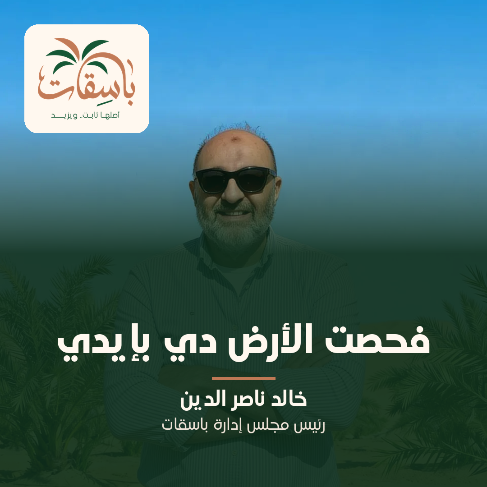

تصميم 1 · كلمة رئيس مجلس الإدارة · لكل الشخصيات
مشروع وراه راجل باسمه وصورته
من أرض الواقع
💡 ليه التصميم ده: شخصية المؤسس أقوى ورقة ثقة عندنا، ولسه ماستخدمناهاش في الحساب خالص.
النص الأساسي
قبل ما باسقات تبقى مشروع مفتوح للمشاركة، كانت قرار شخصي. خالد ناصر الدين، رئيس مجلس إدارة باسقات، قعد سنين في الاستثمار الزراعي، وشاف مشاريع كتير ورفضها. لما جه يختار الأرض دي، نزلها بنفسه: شاف التربة، والمياه، والآبار، والمستندات، وبعدين حط اسمه عليها. علشان كده إحنا مش بنستخبى ورا شركة من غير وش. اللي بيقولك تعالى شوف، راجل معروف، بيقابل الناس، وبيرد بنفسه. عايز تعرف المشروع من الأول للآخر؟ حمّل دليل باسقات، أو ابدأ محادثة على الواتساب.
وصف الرابط
خالد ناصر الدين بيتكلم عن اللي شافه بنفسه
تعرف أكتر
قرارك: